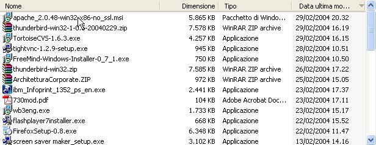
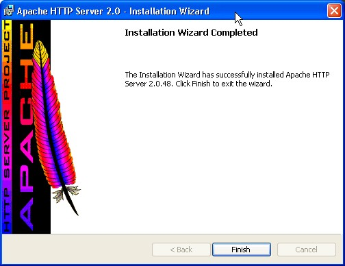
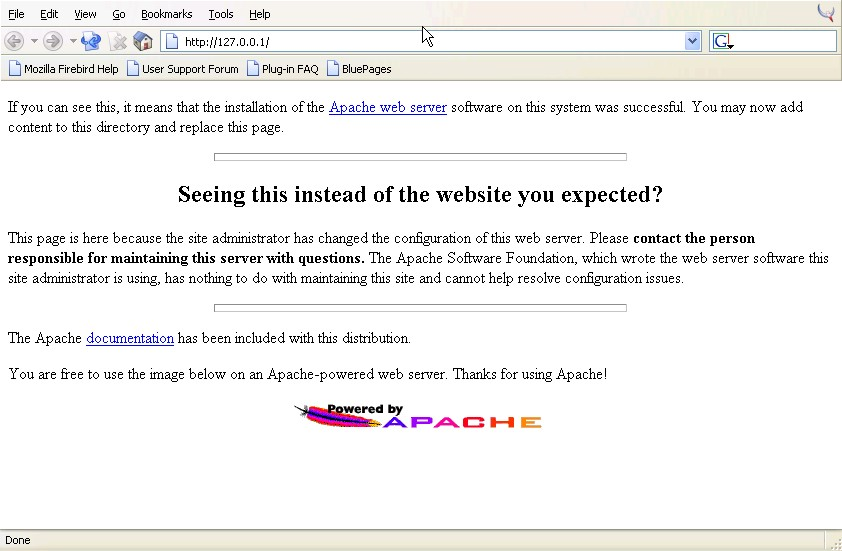
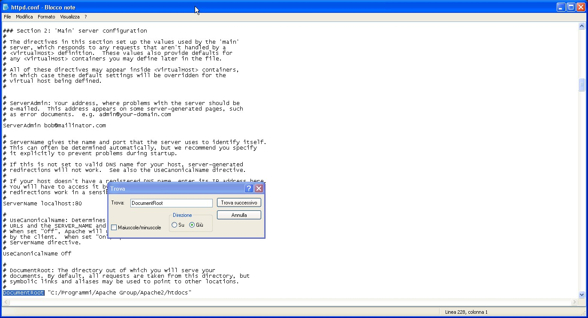

Ver 1.0 - 29 February 2004
Robert J. Alexander - Rome - Italy
(For any corrections or simple thanks 8-> my email is bob and my provider is ngi.it)
Please read the disclaimer before using this document.
First of all locate the best mirror to download Apache from.
Select the lastest release and the .msi version from the binaries/win32 directory. At the time of this writing this package is release 2.0.48 (here is the the package I am using but please use it only if unable to locate your mirror).
Save the downloaded file to a know directory and then launch it to begin the installation.

If you are installing in a machine with an IP address corresponding to name and domain the values you will need to fill in are obvious. I, like me, you are installing on a machine that hasn't an "official" name (for instance my laptop when disconnected) you can use anything you like in the "domain" field, for example apache.org, and localhost as the server's name.
The installation process will take some time and at the end you will see this screen:

Click on finish and if all went smoothly you will be able to see the "Apache monitor" application iconified in the left section of the taskbar (near the clock). It's a small Apache feather with a small green triangle if the server is running OK. See here the leftmost icon:
As a double check you can now direct your browser to your newly installed Apache server. In my case it's running on my disconnected notebook (IBM Thinkpad T40) and therefore is listening on the 127.0.0.1 loopback interface. I therefore use the http://127.0.0.1 URL (please beware that if you using proxies 127.0.0.1 has to be excluded). Here is what you should see since the fresh install just installs some default placeholder web pages:

Clicking on the Start button of your taskbar and selecting "All programs" you will see the "Apache HTTP Server 2.0.48" entry. Click it. Click on Configure and click on Edit the Apache httpd.conf file. Search for the DocumentRoot entry and this will tell you where you need to place the files to be served via your brand new Apache web server.

In my case I have slightly tweaked the default configuration and have set the DocumentRoot to E:\Documenti\@Data\Apache\htdocs.
Take note of your DocumentRoot directory.
Now it's time to download and install the Freemind applet.
Copyright © 2004 Robert Alexander - bob at ngi.it